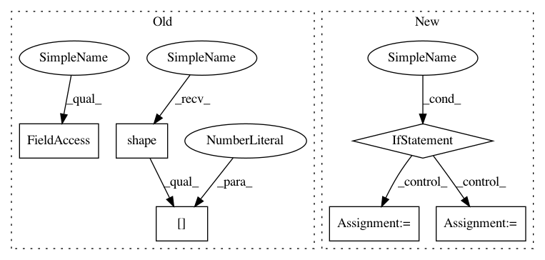

9d9b14ab3f677e906a6829d3389c55857373ea8c,niftynet/layer/loss_segmentation.py,LossFunction,layer_op,#LossFunction#Any#Any#Any#,46
Before Change
loss_batch = tf.map_fn(
fn=_batch_i_loss,
elems=tf.range(tf.shape(pred)[0], dtype=tf.int32),
dtype=tf.float32,
parallel_iterations=1)
After Change
return tf.to_float(self._data_loss_func(**loss_params))
if weight_map is not None:
elements = (pred, ground_truth, weight_map)
else:
elements = (pred, ground_truth)
loss_batch = tf.map_fn(
fn=_batch_i_loss,
elems=elements,
dtype=tf.float32,
In pattern: SUPERPATTERN
Frequency: 3
Non-data size: 6
Instances
Project Name: NifTK/NiftyNet
Commit Name: 9d9b14ab3f677e906a6829d3389c55857373ea8c
Time: 2018-08-08
Author: wenqi.li@ucl.ac.uk
File Name: niftynet/layer/loss_segmentation.py
Class Name: LossFunction
Method Name: layer_op
Project Name: GPflow/GPflow
Commit Name: bb099e4c5b48329b842dbf9884f086f7b514bc0a
Time: 2020-03-16
Author: dutordoirv@gmail.com
File Name: gpflow/models/model.py
Class Name: GPModel
Method Name: predict_f_samples
Project Name: NifTK/NiftyNet
Commit Name: 9d9b14ab3f677e906a6829d3389c55857373ea8c
Time: 2018-08-08
Author: wenqi.li@ucl.ac.uk
File Name: niftynet/layer/loss_segmentation.py
Class Name: LossFunction
Method Name: layer_op
Project Name: NifTK/NiftyNet
Commit Name: 9d9b14ab3f677e906a6829d3389c55857373ea8c
Time: 2018-08-08
Author: wenqi.li@ucl.ac.uk
File Name: niftynet/layer/loss_regression.py
Class Name: LossFunction
Method Name: layer_op